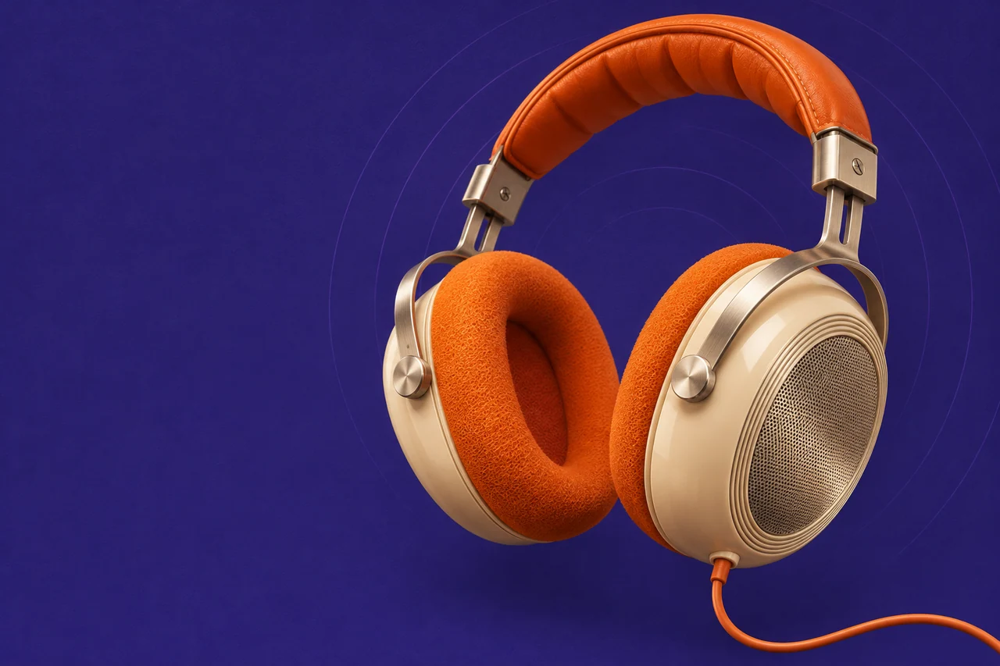

例単語

発音ライブラリ
記号を押して音を聴き、発音のコツと例単語を確かめましょう。
英文リーダー
英文を入力すると、単語ごとの発音記号が並びます。
発音記号
米国英語 · IPA発音記号を押すと、その単語だけを再生します。1秒カーソルを合わせると日本語訳が表示されます。英文にカーソルを置き「読み上げる」を押すと、途中から続けて読めます。
読み上げを準備中…
発音表記と音声について
英文には辞書にある代表的な読みを表示します。同じつづりでも文脈で音が変わる単語や、会話で音がつながる箇所では、読み上げと表記が異なることがあります。辞書にない単語には「未収録」と表示します。
英文は同梱の米語音声で読み上げます。利用できない場合は端末の英語音声に切り替わります。英文の変換と読み上げは、このページ内で処理します。
日本語訳には同梱の英和辞書の語義を表示します。単語には複数の意味があり、文脈によって使われる意味が変わります。辞書にない単語には「英和辞書に未収録です」と表示します。